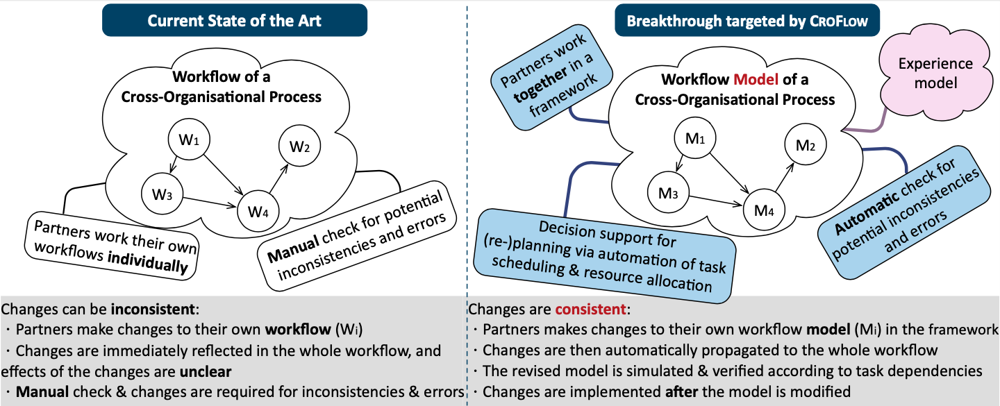

Project coordinator: Violet Ka I Pun
About the Project
Automating workflow planning is one of the most crucial digital transformation activities. Planning cross-organisational workflows requires knowledge from multiple domains. In addition, it requires an overview of how these workflows interact with each other. Existing computer-assisted tools usually lack domain-specific knowledge and flexible support for cross-organisational processes, and very often do not take the actual experience of the workflow participants into account to detect potential bottlenecks in the workflows. Therefore, workflow planning is still largely a manual process relying on human experts, e.g., in hospitals and large enterprises.The Goal
The ultimate goal of the project, CROFLOW, is to devise a new methodology to automate cross-organisational workflow planning and revisioning, which will eventually contribute to a successful digitalisation in both public and private sectors in the future.

The Approach and Outcomes
To achieve this goal, CROFLOW aims at developing an innovative model-driven methodology to capture and analyse the interactions between workflows, and to extract workflow participant experience. The accompanying analyses and tool support will contribute to automated planning for cross-organisational processes.
Collaboration
- Dept of Information Technology, Uppsala University
- Institute for Software Engineering and Programming Languages, University of Lübeck
- Laboratory Medicine and Pathology, Haukeland University Hospital
Financing
Duration: 2021 - 2026Funding: NOK 13.65 mil
Funded by: